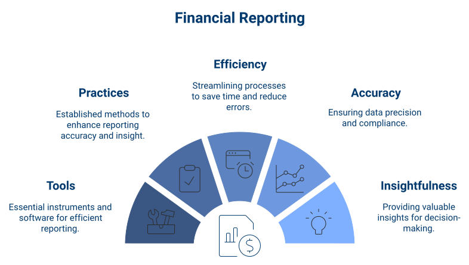
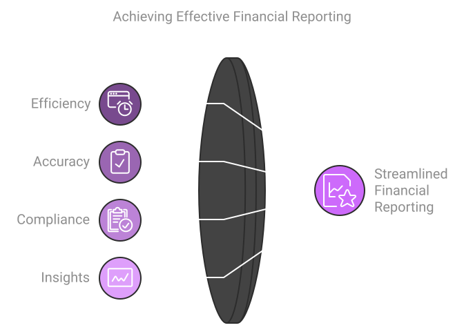
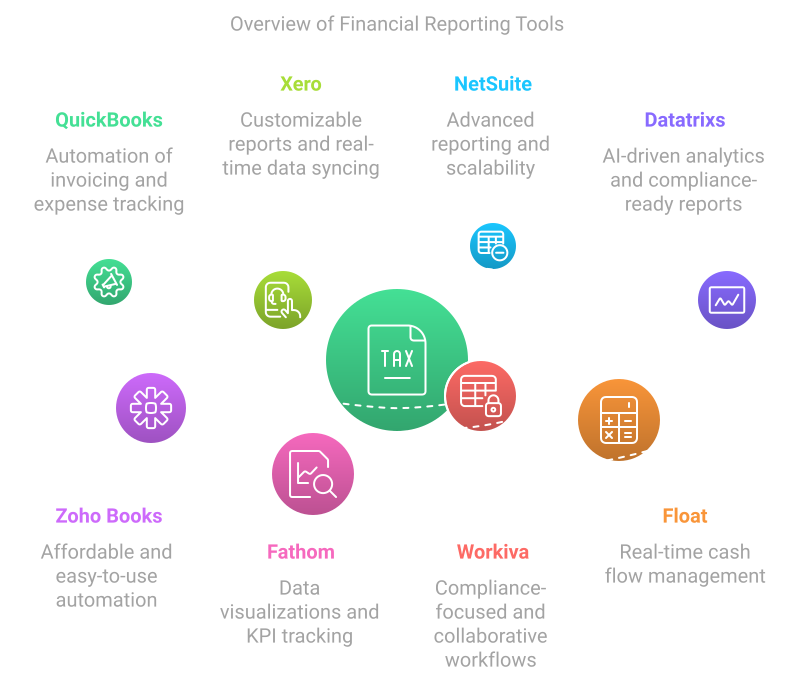
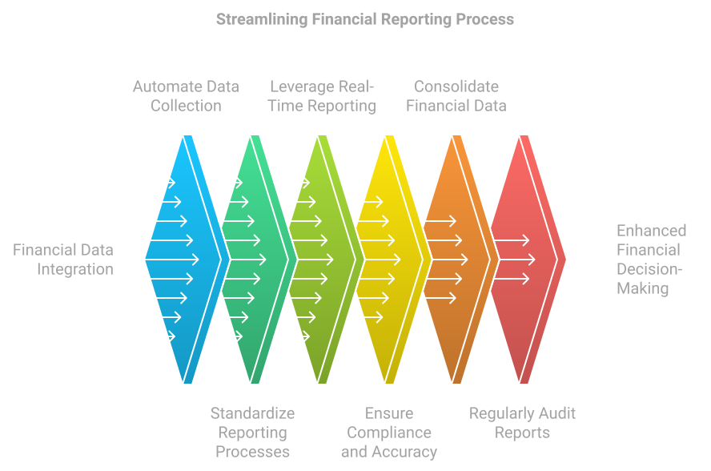

Financial reporting is the cornerstone of sound decision-making for any organization. Whether it’s for internal stakeholders, regulators, or investors, accurate and timely financial reporting provides a clear picture of a company’s financial health. However, the process of compiling reports—gathering data, ensuring accuracy, and maintaining compliance—can be both time-consuming and error-prone. For many businesses, especially as they grow in size and complexity, streamlining financial reporting is not just a best practice but a necessity.
In this post, we will explore the tools and practices that businesses can adopt to make financial reporting more efficient, accurate, and insightful.

The Need for Streamlined Financial Reporting
Before diving into tools and best practices, let’s address why streamlining financial reporting is critical for businesses.
- Efficiency: Manual financial reporting involves considerable time spent collecting, verifying, and entering data. Automating parts of this process can save time and reduce the burden on finance teams.
- Accuracy: Human errors in manual financial reporting can lead to costly mistakes, misinterpretations, and compliance issues. Streamlining the process reduces the chances of such errors.
- Compliance: With ever-evolving accounting standards (e.g., IFRS, GAAP) and regulations, businesses must ensure their financial reports remain compliant. Automated tools can help by ensuring reports adhere to the latest regulations.
- Insights: Streamlining reporting doesn’t just speed up the process—it can provide real-time insights into financial performance, enabling faster, more data-driven decision-making.

Best Tools for Streamlining Financial Reporting
Choosing the right tools can transform how a company manages and delivers its financial reports. Here are some of the best financial reporting tools that cater to organizations of various sizes:
- QuickBooks: Automation of invoicing, expense tracking, and reporting; easy integration with other business tools. Ideal for small businesses, startups, and freelancers.
- Xero: Customizable financial reports, real-time data syncing, multi-currency support. Ideal for small and mid-sized businesses, especially with international clients.
- NetSuite: Advanced reporting features, scalability, automation of financial processes. Ideal for mid-sized and large organizations with complex financial operations.
- Datatrixs: A powerful AI-driven platform for data analytics and financial reporting. Datatrixs integrates with various data sources to provide accurate insights, real-time analytics, and compliance-ready reports.
- Benefits: Automated calculations, seamless API integration, and customizable insights.
- Ideal for: CPA firms, startups, and enterprises seeking advanced financial reporting solutions.
- Zoho Books: Easy to use, affordable, supports automations for recurring transactions. Ideal for small businesses and startups looking for affordable tools.
- Fathom: Data visualizations, benchmarking, KPI tracking, consolidation features. Ideal for growing businesses requiring advanced reporting.
- Workiva: Compliance-focused, collaborative workflows, secure cloud-based storage. Ideal for larger organizations needing regulatory compliance.
- Float: Real-time cash flow management, forecasting, visual reports. Ideal for startups and growing businesses focused on cash flow management.

Best Practices for Streamlining Financial Reporting
- Automate Data Collection: Choose tools that integrate seamlessly with your financial data sources to automate data entry.
- Standardize Reporting Processes: Establish a clear reporting calendar with specific deadlines and responsibilities for each team member.
- Leverage Real-Time Reporting: Implement dashboards that provide real-time visibility into key financial metrics for both finance teams and senior leadership.
- Ensure Compliance and Accuracy with Automation: Use tools that provide built-in compliance checks and automate filings to reduce risks.
- Consolidate Financial Data from Multiple Sources: Implement a tool that handles multi-entity consolidation for unified reports.
- Regularly Audit and Review Financial Reports: Schedule regular financial audits to cross-check data accuracy and maintain reliable workflows.
- Utilize Data Visualization: Present key financial metrics through easy-to-understand visual dashboards to facilitate better decision-making.

Final Thoughts: Streamlining Financial Reporting is a Necessity, Not an Option
For businesses looking to scale efficiently and maintain a competitive edge, streamlining financial reporting is essential. By adopting the right tools and best practices, businesses can save time, increase accuracy, and provide deeper financial insights that guide strategic decision-making.
As technology evolves, more companies are embracing automation and real-time reporting. Businesses that implement these changes effectively will enhance internal financial operations and deliver more timely and accurate reports, leading to better outcomes and growth.